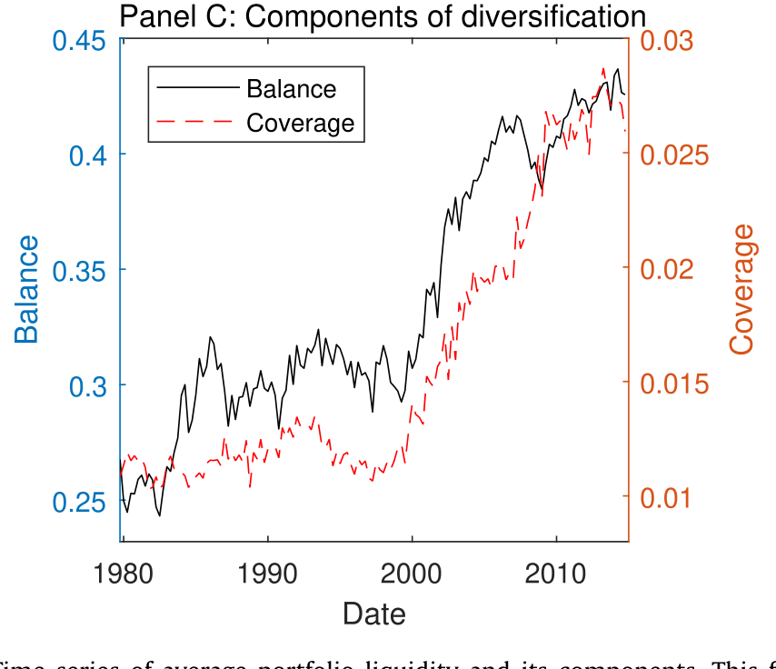
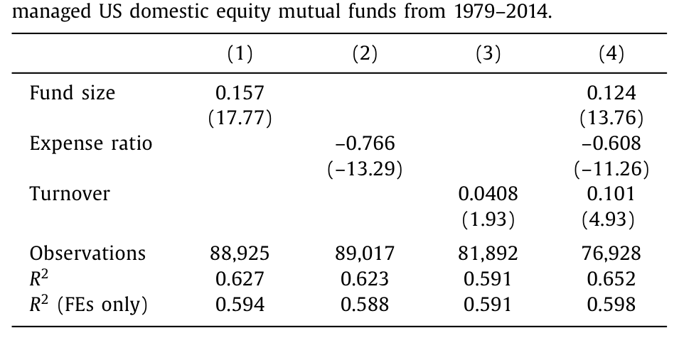
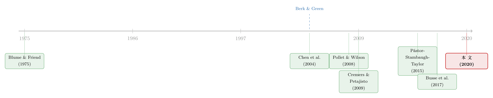

基金的「不可能三角」：当规模、费率与流动性必须互相让步
本文读的是 Pástor, Stambaugh & Taylor (2020, JFE)：在他们的均衡模型与数据里，规模更大、费率更低、换手更高的主动型基金，会持有更「流动」的组合；而这个被作者首次提出的「投资组合流动性」，不仅取决于持仓本身的流动性，更取决于组合的分散程度。把这些此消彼长的「权衡」串起来，恰恰是规模不经济 (diseconomies of scale) 一个全新的、绕开了业绩的证据。
1 一个被问烂、却始终没答好的问题
主动型共同基金到底有没有「规模不经济」？也就是说，一只基金越做越大，它跑赢基准的能力会不会越来越差？
这个问题被问了二十年。最经典的检验思路很直接：把基金的规模 (size) 和它后续的业绩 (performance) 放在一起跑回归，看规模的系数是不是负的。Chen et al. (2004) 找到了显著的负关系，后来的人前赴后继。然而问题在于——这条路太滑了。Reuter and Zitzewitz (2015) 用断点回归重做，结论就软了下来；Pástor et al. (2015) 也指出，规模与业绩的关系对方法极其敏感，换一套设定，符号都可能翻。
为什么这么脆弱？这里有一个几乎是「死结」的逻辑。如果你接受 Berk and Green (2004) 那套理性框架——投资者会不断把钱在基金之间搬动，直到每只基金相对被动基准的预期超额业绩恰好为零——那么在均衡里，业绩本来就该是零。一个恒等于零的东西，你再怎么拿它去和规模做回归，又能识别出什么呢？这就是用「业绩」去捕捉规模不经济时，绕不开的内生性陷阱。
换句话说：理性均衡把「业绩」这块信息几乎榨干了。它告诉你 alpha≈0，却没告诉你基金为了维持这个零、在背后做了多少「妥协」。
于是，本文做了一件聪明的事：别再盯着业绩了。如果规模不经济真的存在，它必然会在基金的其他特征之间，留下一组互相牵制的「权衡」痕迹。把这些痕迹找出来、对上模型的预言，就是对规模不经济更干净的检验。
这正是「Fund Tradeoffs」这个标题的含义——基金特征之间的取舍。
2 先造一把新尺子：什么叫「组合的流动性」
要讲权衡，先得有四个可度量的特征：基金规模 A、费率 f、换手率 T，以及——本文的真正主角——投资组合流动性 (portfolio liquidity) L。
前三个都是现成的。但「一个组合有多流动」，文献里居然几乎没有现成定义。我们有一大堆衡量单只股票流动性的指标（买卖价差、Amihud (2002) 非流动性、换手……），却对「一篮子股票作为整体有多好交易」语焉不详。
作者的定义朴素得近乎固执：如果用相同的美元金额去交易两个组合，交易成本更低的那个，流动性更高。 就这么一句话。然后他们把它推导成一个可计算的量。
设组合里有 N 只股票，w_i 是组合在股票 i 上的权重，m_i 是该股票在市值加权基准里的权重。投资组合流动性是：
$$ L = \left( \sum_{i=1}^{N} \frac{w_i^2}{m_i} \right)^{-1} $$
这个式子是怎么从「交易成本」里长出来的？值得一步步看，因为它后面会和均衡模型严丝合缝地对上。
第一步，把组合当成「一项资产」整体来交易。若总共交易 D 美元的组合，那么按组合权重，股票 i 上被交易的金额是：
$$ D_i = D w_i $$
第二步，沿用「交易得越多、单位成本越高」这一有坚实经验支持的事实（如 Keim and Madhavan (1997) 的价格冲击证据）。假设股票 i 每美元交易成本，与它占自身市值 M_i 的比例成正比：
$$ C_i = c \frac{D_i}{M_i} $$
这里 c 在同一基准（比如同一风格）内对所有股票相同。
第三步，把总成本加总，并代入 D_i = D w_i、m_i = M_i / M：
$$ C = \sum_{i=1}^{N} D_i C_i = (c/M)\, D^2 \sum_{i=1}^{N} \frac{w_i^2}{m_i} $$
看到了吗？括号里那一坨 \(\sum w_i^2 / m_i\) 正好是 L 的倒数。于是 \(C = (c/M)\,D^2 L^{-1}\)。交易同样金额 D，L 越低，总成本 C 越高——这就坐实了「成本低=流动性高」的初衷。
注意：L 是组合自身的属性，和「谁来持有、怎么交易」无关。就像一只股票的买卖价差不会因为你交易得耐心一点就改变一样，作者坚持把这个对单只股票广为接受的视角，原封不动地搬到组合上。
这把尺子有两个漂亮的边界：最不流动的组合是「全押一只票」（且是基准里市值最小的那只），此时 L 几乎为零；而一个组合最流动也只能流动到它的基准那么流动，即 L = 1（当组合权重恰好等于市值权重 w_i = m_i 时）。
3 真正的洞见：流动性 = 持仓流动性 × 分散化
如果故事到此为止，L 不过是个加权成本指标。但真正关键的一步在于：作者证明 L 可以乘法分解成两块——
$$ \text{Portfolio liquidity} = \text{Stock liquidity} \times \text{Diversification} $$
第一块「持仓流动性」是组合里股票流动性的平均，符合直觉：小盘股组合自然比大盘股组合难交易。但第二块「分散化 (diversification)」才是反直觉的灵魂：
哪怕组合里每只股票的流动性完全一样，只交易一只股票的基金，成本也会高于把同样金额铺在 100 只股票上的基金。
也就是说，分散化本身就是一种流动性——把一笔交易摊薄到更多名字上，对每只票的冲击都更小。而分散化还能再拆：
$$ \text{Diversification} = \text{Coverage} \times \text{Balance} $$
「覆盖度 (coverage)」反映持有股票的数量，持得越多覆盖越广；「均衡度 (balance)」反映权重有多接近市值权重，越接近，越均衡。这把作者的分散化度量，巧妙地把文献里两个各自为政的「土办法」——持股数量、组合权重的赫芬达尔指数 (Herfindahl index)——熔到了一个有理论根基的量里。
这个分解为什么重要？因为它把一个静悄悄的历史事实照亮了：美国主动基金的组合，正在变得越来越流动，而背后的引擎是分散化。 从 1979 到 2014，平均组合流动性几乎翻倍；而分散化翻了两番（4 倍），它的两个分量都在稳步上升——覆盖度上升是因为平均基金持有的股票数从 54 只涨到了 126 只，均衡度上升是因为基金权重越来越像市值权重（这一点也和 active share、跟踪误差等指标的趋势相互印证，参见 Cremers and Petajisto (2009)）。

Figure 1: Time series of average portfolio liquidity and its components. This
4 模型：一只基金如何在「不可能三角」里求生
现在把这把尺子塞进一个均衡模型，看四个特征如何互相牵制。
设定。 考虑一只主动基金在单期内的决策。它的预期总交易成本是一个简洁的乘幂函数：
这里 A 是基金规模（AUM），T 是换手率，L 是组合流动性，θ, γ, λ, φ 都是正数。关键假设是 γ > 1：成本对规模是凸增的——这正是 Berk and Green (2004) 笔下「越大越难做」的规模不经济。注意，前一节那个从交易成本推出的 L，恰好是这个一般成本函数在 γ=2, λ=2, φ=1 时的特例。也就是说，第 2 节的微观推导，反过来为这里的函数形式背了书。
收益端。 基金的预期（基准调整后）毛收益，由技能和「施展得多积极」共同决定：
$$ a = \mu\, g(T, L) $$
μ 是基金特有的技能常数，g(T,L) 刻画它把技能施展得多积极。和 Berk-Green 一样，规模 A 只进成本、不进毛收益。
基金的目标。 基金收的是费率 f，总收入是：
$$ F = f A $$
而投资者决定把多少钱 A 投进来。投资者的逻辑沿用 Berk-Green：他们不断调整 A，直到净的基准调整后超额收益 α 等于一个（基金已知的）常数：
$$ \alpha = a - q(A) - f $$
其中 \(q(A;T,L) = C(A,T,L)/A\) 是每美元的比例交易成本。这个 α 可以是 Berk-Green 假设的 0，也可以是任何非零常数——比如 Gârleanu and Pedersen (2018) 那种对搜寻成本的补偿，甚至可以因投资风格的竞争程度不同而不同（如 Hoberg et al. (2018)）。
核心推导。 基金选 f 来最大化收入 F = fA。令 \(h = a - \alpha - f\)，则 \(A = q^{-1}(h)\)。对 f 求导：
$$ \frac{dF}{df} = A + f \frac{d\,q^{-1}(h)}{dh}\frac{dh}{df} = A + f\, q'\!\left(\tfrac{1}{q^{-1}(h)}\right)(-1) = A - \frac{f}{q'(A)} $$
令 \(dF/df = 0\)，得到一个干净的一阶条件：
$$ f = A\, q'(A) $$
对我们的乘幂成本函数，\(q = \theta A^{\gamma-1} T^{\lambda} L^{-\phi}\)，所以 \(q'(A) = (\gamma-1)q/A\)，代回去就得到本文那个新颖的核心结果：
$$ f = (\gamma - 1)\, q(A; T, L) $$
这句话的分量在于：它把一只优化后基金的费率，和它的均衡比例交易成本 q 直接拴在了一起。取对数、整理，就得到把四个特征串起来的均衡关系：
$$ \ln L = \frac{1}{\phi}\ln[(\gamma-1)\theta] + \frac{\gamma-1}{\phi}\ln A - \frac{1}{\phi}\ln f + \frac{\lambda}{\phi}\ln T $$
写成可估计的形式：
$$ \ln L = b_0 + b_1 \ln A - b_2 \ln f + b_3 \ln T $$
其中 b_1, b_2, b_3 都是跨基金为正的常数。这一个方程，就是全文的「不可能三角」：
- 规模
A↑ → 流动性L↑（大基金被迫持更流动的组合） - 费率
f↑ → 流动性L↓（贵的基金更小，更敢碰不流动的票） - 换手
T↑ → 流动性L↑（交易频繁的基金需要更流动的底仓）
直觉是干净的：一只大基金为了压低交易成本，最优选择就是少交易、并持有更流动的组合——要么挑更流动的股票，要么干脆把仓位铺得更分散。规模不经济，就这样从「业绩」转移到了「特征之间的取舍」上。
5 数据与结果：三个符号，全中
作者在 2,789 只主动型美国股票基金、1979–2014 的面板上检验这个方程。换手率按 Pástor et al. (2017) 在 1% 和 99% 处缩尾。L 在主回归里以基金的风格基准（如大盘成长）为参照定义，因为他们加了风格-季度固定效应。
当把 \(\ln L\) 对 \(\ln A\)、\(\ln f\)、\(\ln T\) 做横截面回归——三个斜率全部是模型预言的符号，且在经济与统计上都高度显著。规模更大、更便宜、交易更多的基金，确实持有更流动的组合。

Table 1
模型不止预言这三条。它进一步推出关于分散化的一组权衡：组合更分散的基金，应当更大、更便宜、交易更多，且其持仓股票更不流动。数据对这四条全部给出强支持。其中最值得玩味的是最后一条——分散化与持仓流动性是替代品：持有不流动股票的基金，会靠「更分散」来补偿。同理，分散化的两个分量覆盖度与均衡度也互为替代：覆盖度低的组合，往往更均衡。
模型还顺手给出一个关于「积极程度 (activeness)」的新度量——它把换手率和组合流动性揉在一起，而不只看持仓（这一点上，它和 Cremers and Petajisto (2009) 的 active share 神似，但多了「交易」这一维）。预言是：更小、更贵的基金应当更积极。数据照单全收。
最后，作者把这套逻辑接回了 Pástor et al. (2017) 的「换手-业绩」关系：既然不流动的组合往往藏着更大的获利机会、但也更贵，那么换手对后续业绩的正向作用，应该在持有不流动组合的基金里更强。数据再次印证。
这就是全文反复敲打的那一个核心：把规模不经济从「难以识别的业绩回归」里解放出来，让它显形为一组特征之间互相让步的权衡。每一条权衡，单独看都不起眼；合在一起，它们对「主动管理存在规模不经济」构成了一个比业绩回归干净得多的证据链。
6 重新定义「规模」
文章末尾有一个轻巧却深刻的转向。我们习惯把基金的「规模」等同于 AUM。但在这个模型里，面对规模不经济的，其实不是 A，而是 A × 积极程度。
这个修正很有道理：两只基金管同样多的钱，但一只把钱用得更「积极」（交易更猛、组合更不流动），那它在市场上留下的「脚印」更大，理应被视作在更大的尺度上运营。规模不经济作用在这个更精细的「尺度」上——而不是朴素的 AUM。
7 文献脉络
这条研究的主线，是「主动管理的规模不经济」。
源头是 Berk and Green (2004)：他们用理性均衡把基金业绩「钉」在零，既给了规模不经济一个优雅的理论外壳，也无意间给后来者埋下了「业绩无法识别规模不经济」的难题。紧接着，Chen et al. (2004) 在数据里找到规模负向预测业绩的证据，把这条线推向实证；但 Pástor et al. (2015)、Reuter and Zitzewitz (2015) 等很快指出，这个结论对方法高度敏感。

与此同时，另外两支文献在悄悄汇流。一支是基金交易行为：Pollet and Wilson (2008) 发现基金面对资金流入，主要靠「加仓已有持仓」而非「增加持股数」来应对，但大基金和小盘基金更愿意分散——这恰好是本文理论的预言；Busse et al. (2017) 在更小的样本（583 只基金，1999–2011）里报告了大基金交易更少、持有更流动股票。另一支是分散化文献：从 Blume and Friend (1975) 对个人组合「低分散」的记录，到 Kacperczyk et al. (2005) 对机构「行业集中」的刻画，分散化对风险的含义早已被讲透，但它对交易成本和规模不经济的含义，一直没人系统地接上。
本文（2020）所处的位置，正是这三股水流的交汇点：它造出「投资组合流动性」这把新尺子，把分散化第一次嵌进流动性与规模不经济的框架，并用「特征间的权衡」这一全新角度，绕开了业绩回归的死结。
（关于流动性如何在组合层面、而非个券层面重新被丈量，这条思路也呼应了《把「成交价」从「成交量」里解放出来——重新丈量公司债的流动性》；关于基金流动性与脆弱性的另一面，可参见《基金越难脱手，它手里的债券越「抖」》。）
8 评论与延伸（Q&A + 研究方向）
(a) 几个可能的疑问
Q：这个「投资组合流动性」和 active share、跟踪误差到底有什么区别？
Active share 衡量组合权重偏离基准多远，是个纯粹的「持仓偏离」量。本文的
L = (Σ w_i²/m_i)^{-1}表面上也依赖权重对基准的偏离，但它有明确的交易成本微观基础：L越低意味着交易同样金额的组合越贵。而且L还能乘法分解为「持仓流动性 × 分散化」，能区分「你持有的票本身难交易」和「你押得太集中」这两种完全不同的不流动来源——这是 active share 给不了的。
Q：核心一阶条件 f = (γ-1)q 看着太巧了，它的可信度有多高？
它确实是整个均衡的枢纽，所有跨基金权衡都从它流出。它成立依赖两个假设：投资者按 Berk-Green 把 α 调成常数，以及成本函数是乘幂形式。前者是这支文献的标准设定；后者虽是函数形式假设，但作者证明了它能从第 2 节的交易成本微观推导中作为特例
γ=2,λ=2,φ=1浮现出来，所以并非凭空硬塞。真正的软肋是γ, λ, φ跨基金同质这一条——见下一问。
Q：模型假设所有基金面对同一个成本函数，这现实吗？
这是最强的简化。作者允许基金在技能
μ和积极函数g(T,L)上不同，但要求成本函数的θ, γ, λ, φ跨基金相同——正是这一条让b_0, b_1, b_2, b_3成为跨基金常数、从而可估计。如果不同风格、不同规模的基金实际面对不同的γ（比如小盘基金的成本凸性更强），那么横截面回归的斜率就是某种加权平均，解释要更小心。
Q：分散化「翻了两番」会不会只是被动化浪潮的副产品，而非主动选择？
两者难以完全切开。1979–2014 间主动基金越来越像指数（active share 下降、跟踪误差收窄），分散化上升与此同向。但本文的贡献不在于「为什么会上升」，而在于指出：无论上升的外因是什么，分散化都通过流动性这条渠道，参与了规模不经济的均衡。它把一个被解读为「主动管理退化」的现象，重新诠释为「大基金对交易成本的理性回应」。
Q：既然 α 在均衡里是常数，这篇文章不就等于承认我们永远测不出规模不经济对业绩的影响吗？
可以这么说——而这恰恰是它的方法论主张。它不否认规模侵蚀业绩，而是说：在理性均衡里，这种侵蚀会被资金流「消化」成 α≈常数，于是业绩回归先天乏力。真正承载规模不经济信息的，是基金为维持那个均衡而做出的特征权衡。换个地方找证据，而不是在业绩上反复鞭尸。
Q：L 的定义里基准选「整个市场」还是「风格指数」，结果会变吗？
会影响数值，但不影响主结论。作者两种都用：主回归用风格基准（大盘成长之类），因为他们加了风格-季度固定效应，需要在可比的基准内比较
L。L的一个数学性质是「组合再流动也不会超过它的基准」（L≤1），所以基准选得越窄，L的标尺越紧。
(b) 几个可能的研究问题与提案
1. 把「投资组合流动性」搬到公司债基金上。
【经济故事】本文的
L是为股票组合设计的，但公司债市场的流动性摩擦远大于股票，且高度异质（投资级 vs 高收益、新券 vs 老券）。一只债券基金的「组合流动性」与其规模、费率、换手的权衡，可能比股票基金更陡峭——因为债券的价格冲击对交易规模更敏感。【可行性】中。m_i需要用债券的存量规模或发行额近似，交易成本可借助 TRACE 的实现价差或 Amihud 类指标。难点在于债券没有干净的「市值权重基准」，需要构造行业/评级基准。识别上可沿用本文的横截面回归 + 基准-季度固定效应。
2. 外资持有人会改变基金的「权衡曲线」吗？
【经济故事】不同投资者群体的资金流敏感度不同（Berk-Green 的 α 调整机制依赖资金流）。如果一只基金的份额更多由外资/机构持有，其资金流可能更「黏」或更「急」，从而改变它面对的有效成本凸性
γ，进而移动整条ln L权衡线。【可行性】中偏低。需要基金层面的投资者结构数据（如 13F、跨境持有数据），而把投资者结构外生化很难，可能要找份额类别（institutional vs retail share class）的孪生基金做对照，思路类似 Evans and Fahlenbrach (2012)。
3. 分散化-持仓流动性的「替代弹性」是否随市场状态变化？
【经济故事】本文证明分散化与持仓流动性是替代品，但这个替代率在危机时可能崩塌——当所有票同时变得不流动（系统性流动性枯竭），靠「分散」来补偿的渠道会失效。【可行性】高。直接在本文面板上加入市场流动性状态的交互项即可，数据现成（基金持仓 + 个券流动性）。能干净地检验「分散化作为流动性来源」在尾部是否可靠，对理解基金脆弱性（呼应 monetary-policy-and-fragility 那条线）有直接价值。
4. 「积极程度 = 换手 × 组合流动性」能预测业绩吗？
【经济故事】本文造了新的积极度量但没拿它预测业绩（因为它刻意回避业绩）。但 Cremers-Petajisto 的 active share 能预测业绩，那么这个把「交易」也算进去的新度量，是否预测力更强？【可行性】高。度量可直接构造，业绩数据现成，跑标准的横截面预测回归即可。风险是 Berk-Green 框架预言 α≈0，可能本就测不出，但这反而是个有意思的检验。
5. 用「规模 × 积极程度」重做规模-业绩回归。
【经济故事】本文主张真正承受规模不经济的是
A × 积极程度而非A。那么把传统规模-业绩回归里的解释变量换成这个修正尺度，那条「脆弱的负关系」会不会变得稳健？【可行性】高。这几乎是本文留下的最直接的后续，数据与方法都现成，唯一的工程量是把积极程度度量算清楚。若修正后符号更稳，会是对 Reuter-Zitzewitz 那场「方法敏感性」争论的有力回应。
我的判断
这篇文章最漂亮的地方，是它的方法论转身：当所有人都在业绩这口枯井里打水，它转身去看特征之间的权衡，并造了一把（投资组合流动性）有交易成本微观基础、又能干净分解的新尺子。L = Stock liquidity × Diversification 和 Diversification = Coverage × Balance 这两层分解，把一个含糊的概念变成了可计算、可检验的对象，本身就是值得留存的工具贡献。三个预言符号全中、四条分散化预言全中，证据的内部一致性很强。
但要把它当成规模不经济的「铁证」，仍有两点需要诚实面对。其一，所有跨基金权衡都依赖「成本函数同质」这一假设。b_1, b_2, b_3 是常数、从而可估计，前提是 γ, λ, φ 不随基金变化；一旦不同风格的基金面对不同的成本凸性，回归斜率的解释就会变味。其二，这套检验是均衡的、横截面的关联，不是外生冲击下的因果。所有特征都是基金的内生选择，作者用风格-季度固定效应吸收了很多共同变动，但「权衡符合模型预言」与「权衡由规模不经济导致」之间，仍隔着模型这座桥——你信这座桥，证据才成立。
我接下来最想看到的，是两件事。一是把这把尺子搬到公司债/信用市场（上面的研究提案 1），那里的流动性摩擦更大、规模不经济可能更尖锐，是检验框架可移植性的天然试验场。二是用一个真正外生的规模冲击（比如指数纳入带来的被动资金涌入），去看基金的 L、T、分散化是否朝模型预言的方向调整——那将把「均衡关联」推进到「动态因果」，让这套优雅的权衡理论真正站到外生变异的检验台上。
参考文献
- Amihud, Y. (2002). Illiquidity and stock returns: cross-section and time-series effects. Journal of Financial Markets 5, 31–56.
- Berk, J.B., Green, R.C. (2004). Mutual fund flows and performance in rational markets. Journal of Political Economy 112, 1269–1295.
- Blume, M.E., Friend, I. (1975). The asset structure of individual portfolios and some implications for utility functions. Journal of Finance 30, 585–603.
- Busse, J.A., Chordia, T., Jiang, L., Tang, Y. (2017). Mutual fund trading costs. Emory University, working paper.
- Chen, J., Hong, H., Huang, M., Kubik, J. (2004). Does fund size erode mutual fund performance? American Economic Review 94, 1276–1302.
- Cremers, M., Petajisto, A. (2009). How active is your fund manager? A new measure that predicts performance. Review of Financial Studies 22, 3329–3365.
- Edelen, R., Evans, R., Kadlec, G. (2013). Shedding light on "invisible" costs: trading costs and mutual fund performance. Financial Analysts Journal 69, 33–44.
- Gârleanu, N., Pedersen, L.H. (2018). Efficiently inefficient markets for assets and asset management. Journal of Finance 73, 1663–1712.
- Hoberg, G., Kumar, N., Prabhala, N. (2018). Mutual fund competition, managerial skill, and alpha persistence. Review of Financial Studies 31, 1896–1929.
- Kacperczyk, M., Sialm, C., Zheng, L. (2005). On the industry concentration of actively managed equity mutual funds. Journal of Finance 60, 1983–2011.
- Keim, D., Madhavan, A. (1997). Transaction costs and investment style: an inter-exchange analysis of institutional equity trades. Journal of Financial Economics 46, 265–292.
- Pástor, Ľ., Stambaugh, R.F., Taylor, L.A. (2015). Scale and skill in active management. Journal of Financial Economics 116, 23–45.
- Pástor, Ľ., Stambaugh, R.F., Taylor, L.A. (2017). Do funds make more when they trade more? Journal of Finance 72, 1483–1528.
- Pástor, Ľ., Stambaugh, R.F., Taylor, L.A. (2020). Fund tradeoffs. Journal of Financial Economics 138(3), 614–634.
- Pollet, J., Wilson, M. (2008). How does size affect mutual fund behavior? Journal of Finance 63, 2941–2969.
- Reuter, J., Zitzewitz, E. (2015). How much does size erode mutual fund performance? A regression discontinuity approach. Boston College, working paper.